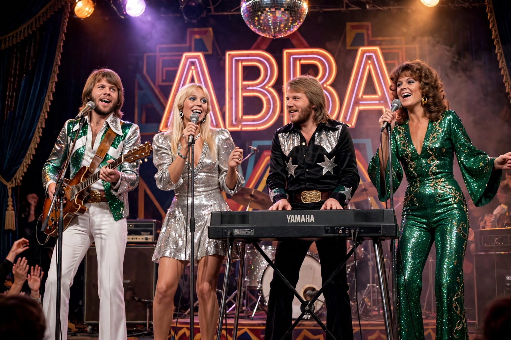

ABBA
From Wikipedia, the free encyclopedia

ABBA are a Swedish pop group formed in Stockholm in 1972 by Agnetha Fältskog, Björn Ulvaeus, Benny Andersson and Anni-Frid Lyngstad. They won the Eurovision Song Contest in 1974 with 'Waterloo' and became one of the best-selling music acts of all time, with hits including 'Mamma Mia', 'Dancing Queen' and 'Fernando'. Their records have sold an estimated 150–400 million copies worldwide.
Career
The two couples — Björn & Agnetha, Benny & Anni-Frid — combined the men's songwriting (Andersson/Ulvaeus, initially with manager Stig Anderson) with the women's intertwined lead vocals, recording at Stockholm's Polar Studios. After Eurovision, ABBA dominated charts worldwide through the late 1970s; tours conquered Australia ('ABBAmania') and the Americas. Both marriages ended (1979, 1981) as the music darkened (The Visitors, 1981); the group quietly stopped in 1982 without ever formally splitting.
Revival and Voyage
The 1992 compilation ABBA Gold became one of the UK's best-selling albums ever; the stage musical Mamma Mia! (1999) and its films made ABBA a permanent fixture of popular culture. In 2021 the group released Voyage, their first album in 40 years, and opened the ABBA Arena in London for concerts performed by digital 'ABBA tars' of their 1979 selves — a residency extended repeatedly.
Legacy
ABBA's crafted pop — wall-of-sound production, melancholy beneath euphoria — influenced generations from Madonna to Lady Gaga; they were inducted into the Rock and Roll Hall of Fame in 2010. In Sweden they are a national institution, honoured by a Stockholm museum (2013).